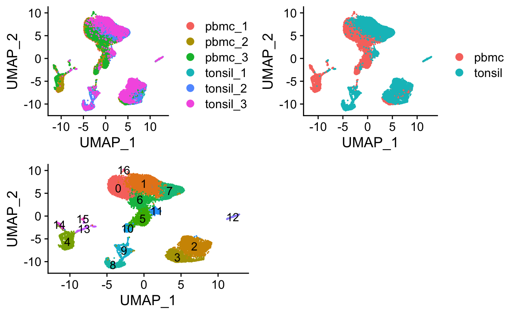

celltalker
Anthony R Cillo
28 March, 2022
celltalker.RmdWelcome to celltalker. This vignette will show the simpliest use case of celltalker, namely and identification the top putative ligand and receptor interactions across cell types from the Human Cell Atlas 40,000 Bone Marrow Cells dataset. This dataset is publicly available in a convenient form the SeuratData package. Check out instructions for downloading this dataset (hcabm40k) here.
Set up analysis
library(celltalker)
library(Seurat)## This version of bslib is designed to work with shiny version 1.5.0.9007 or higher.library(SeuratData)## Registered S3 method overwritten by 'cli':
## method from
## print.boxx spatstat## Warning in if (is.na(desc)) {: the condition has length > 1 and only the first
## element will be used
## Warning in if (is.na(desc)) {: the condition has length > 1 and only the first
## element will be used
## Warning in if (is.na(desc)) {: the condition has length > 1 and only the first
## element will be used
## Warning in if (is.na(desc)) {: the condition has length > 1 and only the first
## element will be used
## Warning in if (is.na(desc)) {: the condition has length > 1 and only the first
## element will be used
## Warning in if (is.na(desc)) {: the condition has length > 1 and only the first
## element will be used
## Warning in if (is.na(desc)) {: the condition has length > 1 and only the first
## element will be used
## Warning in if (is.na(desc)) {: the condition has length > 1 and only the first
## element will be used
## Warning in if (is.na(desc)) {: the condition has length > 1 and only the first
## element will be used
## Warning in if (is.na(desc)) {: the condition has length > 1 and only the first
## element will be used
## Warning in if (is.na(desc)) {: the condition has length > 1 and only the first
## element will be used
## Warning in if (is.na(desc)) {: the condition has length > 1 and only the first
## element will be used## ── Installed datasets ───────────────────────────────────── SeuratData v0.2.1 ──## ✔ cbmc 3.1.4 ✔ pbmc3k 3.1.4
## ✔ hcabm40k 3.0.0## ────────────────────────────────────── Key ─────────────────────────────────────## ✔ Dataset loaded successfully
## ❯ Dataset built with a newer version of Seurat than installed
## ❓ Unknown version of Seurat installedlibrary(tidyverse)## ── Attaching packages ─────────────────────────────────────── tidyverse 1.3.0 ──## ✔ ggplot2 3.3.2 ✔ purrr 0.3.3
## ✔ tibble 3.0.5 ✔ dplyr 1.0.3
## ✔ tidyr 1.0.0 ✔ stringr 1.4.0
## ✔ readr 1.3.1 ✔ forcats 0.4.0## ── Conflicts ────────────────────────────────────────── tidyverse_conflicts() ──
## ✖ dplyr::filter() masks stats::filter()
## ✖ dplyr::lag() masks stats::lag()# Load CMBC data
data(hcabm40k)Dimensional reduction and clustering
First, we will perform and standard workflow to identify the major cell types based on canonical gene expression.
cbmc <- hcabm40k %>%
NormalizeData() %>%
FindVariableFeatures() %>%
ScaleData() %>%
RunPCA()## Centering and scaling data matrix## PC_ 1
## Positive: TMSB4X, NKG7, LAT, KLRB1, CD74, MS4A1, SOCS3, GNLY, IGHD, GZMH
## CD79A, HLA-DQB1, KLRD1, GZMK, S100A12, RGS1, FGFBP2, CCL4, IGKC, FCN1
## LGALS1, HLA-DPB1, SERPINA1, PRF1, GZMB, CD14, HLA-DQA1, IGLC2, VCAN, RGS2
## Negative: AHSP, KIAA0101, FAM178B, KLF1, KCNH2, TYMS, CA1, CA2, GATA1, HBD
## EPCAM, APOC1, GYPA, RHAG, HBB, HBQ1, SMIM1, MYL4, HMBS, CENPU
## CCNB2, CKS2, BIRC5, ALAS2, BLVRB, PCNA, TUBB, HBA1, SYNGR1, CDT1
## PC_ 2
## Positive: LYZ, CST3, S100A9, LST1, S100A8, FCN1, LGALS1, FCER1G, VCAN, MNDA
## S100A12, CFD, SERPINA1, MS4A6A, CD14, PLAUR, GAPDH, MGST1, ACTB, ANXA2
## RP11-1143G9.4, CEBPD, LGALS2, S100A6, RNASE2, HLA-DRA, MAFB, RETN, IFI30, H2AFY
## Negative: EEF1B2, RPS2, RPL7A, RPLP0, GYPC, LAT, GYPA, ALAS2, AHSP, PRDX2
## CA1, GYPB, HSPA8, RHAG, NPM1, RPL37A, MYL4, HBM, LDHB, TMEM56
## KCNH2, KLF1, HBD, SOD1, SLC4A1, KLRB1, HEMGN, CA2, FAM178B, RFESD
## PC_ 3
## Positive: S100A6, FCN1, CD36, GYPA, ALAS2, S100A9, S100A12, S100A8, GYPB, HBM
## FTH1, BLVRB, SLC4A1, VCAN, SERPINA1, HBA2, HBA1, AHSP, LGALS3, CA2
## CD14, RHAG, LYZ, CA1, HBD, TMEM56, CTSE, HEMGN, HBB, G0S2
## Negative: IGLL1, STMN1, VPREB1, SOX4, SMIM24, VPREB3, CD79B, PRSS57, ITM2C, FABP5
## MZB1, SPINK2, CD24, KIAA0125, PHGDH, CDCA7, C1QTNF4, NREP, CD34, UHRF1
## DNTT, TCF4, AC002454.1, PTMA, PDLIM1, IGHM, CD79A, TCL1A, EGFL7, CD9
## PC_ 4
## Positive: PRSS57, CYTL1, NPW, NPR3, PTRF, MEST, NKG7, NGFRAP1, LDHB, SPINK2
## SERPINE2, EGFL7, AP001171.1, C1QTNF4, CRYGD, GNLY, FSCN1, GATA2, KLRD1, KLRB1
## PRF1, WBP5, MAP7, ITGA2B, CNRIP1, CMBL, HACD1, CD34, MT2A, CMC1
## Negative: CD79A, CD79B, VPREB3, IGHM, TCL1A, HLA-DRA, CD24, CD74, HLA-DQB1, IGHD
## HLA-DRB1, VPREB1, HLA-DPB1, MS4A1, HLA-DPA1, IGKC, HLA-DQA1, NUSAP1, MKI67, SPIB
## TOP2A, IGLC2, CD72, MZB1, POU2AF1, AURKB, CD9, JCHAIN, EBF1, IGLC3
## PC_ 5
## Positive: NKG7, GNLY, KLRD1, PRF1, GZMB, FGFBP2, KLRF1, GZMH, CMC1, CCL4
## KLRB1, SPON2, TRDC, CLIC3, TMSB4X, PFN1, C12orf75, FCGR3A, XCL2, CD160
## UBE2C, NUSAP1, MKI67, TRGC1, TOP2A, AURKB, TRGC2, KLRC1, ACTB, MT2A
## Negative: HLA-DRA, CD79A, MS4A1, HLA-DQB1, IGHD, HLA-DQA1, CD74, IGHM, HLA-DRB1, HLA-DPA1
## IGKC, HLA-DPB1, CD79B, IGLC2, KIAA0125, RPS2, TCL1A, IGLC3, PKIG, RPLP0
## JCHAIN, RPL37A, RPL7A, TSPAN13, CYTL1, CNRIP1, VPREB3, RP5-887A10.1, FTH1, ALDH1A1ElbowPlot(cbmc)
cbmc <- RunUMAP(cbmc,dims=1:8) %>%
FindNeighbors(.,dims=1:8) %>%
FindClusters(.,res=0.7)## Warning: The default method for RunUMAP has changed from calling Python UMAP via reticulate to the R-native UWOT using the cosine metric
## To use Python UMAP via reticulate, set umap.method to 'umap-learn' and metric to 'correlation'
## This message will be shown once per session## 20:31:18 UMAP embedding parameters a = 0.9922 b = 1.112## 20:31:18 Read 40000 rows and found 8 numeric columns## 20:31:18 Using Annoy for neighbor search, n_neighbors = 30## 20:31:18 Building Annoy index with metric = cosine, n_trees = 50## 0% 10 20 30 40 50 60 70 80 90 100%## [----|----|----|----|----|----|----|----|----|----|## **************************************************|
## 20:31:23 Writing NN index file to temp file /var/folders/_p/n2bykf5555bcpmdl3yfw8y540000gn/T//RtmpdEKrJU/filebba67432cae0
## 20:31:24 Searching Annoy index using 1 thread, search_k = 3000
## 20:31:40 Annoy recall = 100%
## 20:31:40 Commencing smooth kNN distance calibration using 1 thread
## 20:31:42 Initializing from normalized Laplacian + noise
## 20:31:50 Commencing optimization for 200 epochs, with 1633838 positive edges
## 20:32:09 Optimization finished
## Computing nearest neighbor graph
## Computing SNN## Modularity Optimizer version 1.3.0 by Ludo Waltman and Nees Jan van Eck
##
## Number of nodes: 40000
## Number of edges: 1158441
##
## Running Louvain algorithm...
## Maximum modularity in 10 random starts: 0.8967
## Number of communities: 18
## Elapsed time: 13 secondsAssign cell types
Next, we will assign the cell types.
For this exemplary analysis with celltalker, we will filter out the transitional subpopulations to focus purely on putative interactions between canonical cell types. The transitional populations are intriguing - but are beyond the scope of this simple vignette.
# Check out clusters
DimPlot(cbmc,group.by="RNA_snn_res.0.7",label=T)## Warning: Using `as.character()` on a quosure is deprecated as of rlang 0.3.0.
## Please use `as_label()` or `as_name()` instead.
## This warning is displayed once per session.
FeaturePlot(cbmc,c("CD34","CD14","FCGR3A","MS4A1","CD1C","IL3RA"))
FeaturePlot(cbmc,c("CD3D","CD4","CD8A","FCGR3A","HBB"))
# Check out cell types
cell_types <- vector("logical",length=ncol(cbmc))
names(cell_types) <- colnames(cbmc)
cell_types[cbmc@meta.data$RNA_snn_res.0.7=="0" |
cbmc@meta.data$RNA_snn_res.0.7=="2" |
cbmc@meta.data$RNA_snn_res.0.7=="6" ] <- "CD4 T cells"
cell_types[cbmc@meta.data$RNA_snn_res.0.7=="3"] <- "CD8 T cells"
cell_types[cbmc@meta.data$RNA_snn_res.0.7=="5"] <- "NK cells"
cell_types[cbmc@meta.data$RNA_snn_res.0.7=="8" |
cbmc@meta.data$RNA_snn_res.0.7=="11"] <- "RBCs"
cell_types[cbmc@meta.data$RNA_snn_res.0.7=="1"] <- "CD14 monocytes"
cell_types[cbmc@meta.data$RNA_snn_res.0.7=="14"] <- "CD16 monocytes"
cell_types[cbmc@meta.data$RNA_snn_res.0.7=="15"] <- "CD1C DC"
cell_types[cbmc@meta.data$RNA_snn_res.0.7=="10"] <- "CD34 HPSC"
cell_types[cbmc@meta.data$RNA_snn_res.0.7=="4"] <- "B cells"
cbmc[["cell_types"]] <- cell_types
# Filter cells - remove transitional cell populations and RBCs
cbmc_filtered <- cbmc[,!cbmc[["cell_types"]]=="FALSE"]
cbmc_filtered <- cbmc_filtered[,!cbmc_filtered[["cell_types"]]=="RBCs"]
# Check out final object
DimPlot(cbmc_filtered,group.by="cell_types")
Create mean expression matrices
Now, we will create ligand and receptor by cell type matrices that summarize the mean expression level of a given ligand or receptor. But first we will only keep cell types that have 100 or more cells and we will only keep ligands that are expressed at greater than 1000 and less than 20000 across all cell types.
# Filter by cells present - require 100 cells
table(cbmc_filtered@meta.data$cell_types)##
## B cells CD14 monocytes CD16 monocytes CD1C DC CD34 HPSC
## 4864 5536 533 428 935
## CD4 T cells CD8 T cells NK cells
## 13813 4950 2780cell_types_keep <- names(table(cbmc_filtered@meta.data$cell_types))[table(cbmc_filtered@meta.data$cell_types)>100]
# Filter cells
cbmc_filtered <- cbmc_filtered[,cbmc_filtered@meta.data$cell_types %in% cell_types_keep]
# Filter genes
ligs.recs.all <- unique(c(unique(as.character(ramilowski_pairs$ligand)),
unique(as.character(ramilowski_pairs$receptor))))
ligs.recs.use <- ligs.recs.all[ligs.recs.all %in% rownames(cbmc_filtered)]
overall.lig.rec <- GetAssayData(cbmc_filtered,slot="counts",assay="RNA")[ligs.recs.use,]
ligs.keep <- apply(overall.lig.rec,1,sum)[apply(overall.lig.rec,1,sum)>1000 &
apply(overall.lig.rec,1,sum)<20000]
cbmc_filtered <- cbmc_filtered[names(ligs.keep),]
# Split object
pbmc3k_filtered_split <- SplitObject(cbmc_filtered,split="cell_types")
expr_ligs <- do.call(cbind,lapply(pbmc3k_filtered_split ,function(x) {
expr <- GetAssayData(x,assay="RNA",slot="data")
apply(expr[rownames(expr) %in% ramilowski_pairs$ligand,],1,mean)
}))
expr_recs <- do.call(cbind,lapply(pbmc3k_filtered_split,function(x) {
expr <- GetAssayData(x,assay="RNA",slot="data")
apply(expr[rownames(expr) %in% ramilowski_pairs$receptor,],1,mean)
}))Run celltalker
These three function take the ligand and receptor matrices created above and create a joint mean expression level and a scrambled mean expression level. These two resultant tibbles and then used to create a statistically summary of the differences in ligand and receptor levels with the third function.
lig_rec_means <- ligand_receptor_means(ligand_mean_dataframe=expr_ligs,receptor_mean_dataframe=expr_recs,ligand_receptor_pairs=ramilowski_pairs,number_cell_types=length(pbmc3k_filtered_split))
lig_rec_scram <- ligand_receptor_scramble(ligand_receptor_means=lig_rec_means,ligand_mean_dataframe=expr_ligs,receptor_mean_dataframe=expr_recs,ligand_receptor_pairs=ramilowski_pairs,number_cell_types=length(pbmc3k_filtered_split),scramble_times=10)
stats <- ligand_receptor_stats(ligand_receptor_means=lig_rec_means,ligand_receptor_scramble=lig_rec_scram)Create circos plot
# ID top 3 interactions per cell type
top_stats <- stats %>%
mutate(fdr=p.adjust(p_val,method="fdr")) %>%
filter(fdr<0.05) %>%
group_by(cell_type1) %>%
top_n(3,interact_ratio) %>%
ungroup()
colours_use <- RColorBrewer::brewer.pal(n=length(pbmc3k_filtered_split),"Set2")
suppressMessages(
circos_plot(ligand.receptor.frame=top_stats,colors=colours_use,lig.col="blue",rec.col="red")
)